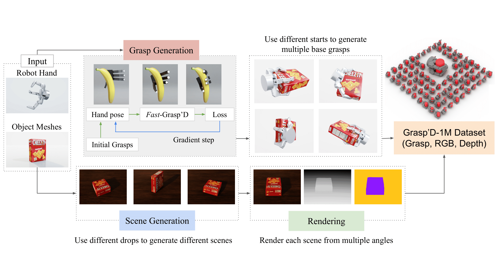

Publications
Scalable Behavior Cloning with Open Data, Training, and Evaluation
Preprint
We introduce ABC, a fully open-source stack for bimanual manipulation with behavior cloning. At its core is the release of ABC-130K, the largest bimanual teleoperation dataset to date, featuring 3,500 hours of data spanning over 130K episodes across nearly 200 diverse tasks. Furthermore, we open-source our accessible hardware setup, training infrastructure, and simulation pipeline. We also release 400 hours of sim-teleop data and provide a co-training recipe that produces correlated simulation and real-world evaluation. This allows researchers to effectively evaluate design choices without deploying on physical robots. We explore various training recipes and compare common architectural choices for Diffusion Transformers (DiT) and Vision-Language-Action (VLA) models, grounding our findings in real-world evaluations whose logs will also be released. The resulting policies successfully execute dexterous tasks such as box folding and extracting credit cards from wallets. By providing a reproducible toolbox, we aim to place researchers on an equal footing, establishing the necessary foundation to learn the ABCs of Behavior Cloning together as a community.

Isaac Lab: A GPU-Accelerated Simulation Framework for Multi-Modal Robot Learning
Preprint
We present Isaac Lab, the natural successor to Isaac Gym, which extends the paradigm of GPU-native robotics simulation into the era of large-scale multi-modal learning. Isaac Lab combines high-fidelity GPU parallel physics, photorealistic rendering, and a modular, composable architecture for designing environments and training robot policies. Beyond physics and rendering, the framework integrates actuator models, multi-frequency sensor simulation, data collection pipelines, and domain randomization tools, unifying best practices for reinforcement and imitation learning at scale within a single extensible platform. We highlight its application to a diverse set of challenges, including whole-body control, cross-embodiment mobility, contact-rich and dexterous manipulation, and the integration of human demonstrations for skill acquisition. Finally, we discuss upcoming integration with the differentiable, GPU-accelerated Newton physics engine, which promises new opportunities for scalable, data-efficient, and gradient-based approaches to robot learning. We believe Isaac Lab's combination of advanced simulation capabilities, rich sensing, and data-center scale execution will help unlock the next generation of breakthroughs in robotics research.
End-to-end RL Improves Dexterous Grasping Policies
Preprint
This work explores techniques to scale up image-based end-to-end learning for dexterous grasping with an arm + hand system. Unlike state-based RL, vision-based RL is much more memory inefficient, resulting in relatively low batch sizes, which is not amenable for algorithms like PPO. Nevertheless, it is still an attractive method as unlike the more commonly used techniques which distill state-based policies into vision networks, end-to-end RL can allow for emergent active vision behaviors. We identify a key bottleneck in training these policies is the way most existing simulators scale to multiple GPUs using traditional data parallelism techniques. We propose a new method where we disaggregate the simulator and RL (both training and experience buffers) onto separate GPUs. When deploying in the real world, we improve upon the previous state-of-the-art vision-based results using our end-to-end policies. To our knowledge, this is the first work that has demonstrated end-to-end RL for dexterous grasping with multifingered hands.
Visuomotor Policies to Grasp Anything with Dexterous Hands
ICRA 2026
One of the most important yet challenging skills for robots is dexterous multi-fingered grasping of a diverse range of objects. Much of the prior work is limited by the speed, dexterity, or reliance on depth maps. In this paper, we introduce DextrAH-RGB, a system that can perform dexterous arm-hand grasping end2end from stereo RGB input. We train a teacher policy in simulation through reinforcement learning that acts on a geometric fabric action space to ensure reactivity and safety. We then distill this teacher into an RGB-based student in simulation. To our knowledge, this is the first work that is able to demonstrate robust sim2real transfer of an end2end RGB-based policy for a complex, dynamic, contact-rich tasks such as dexterous grasping. Our policies are also able to generalize to grasping novel objects with unseen geometry, texture, or lighting conditions during training.
Synthetica: Large Scale Synthetic Data Generation for Robot Perception
IROS 2025
We present Synthetica, a method for large-scale synthetic data generation for training robust state estimators. This paper focuses on the task of object detection, an important problem which can serve as the front-end for most state estimation problems, such as pose estimation. Leveraging data from a photorealistic ray-tracing renderer, we scale up data generation, generating 2.7 million images, to train highly accurate real-time detection transformers. We demonstrate state-of-the-art performance on the task of object detection while having detectors that run at 50--100Hz which is 9 times faster than the prior SOTA.
DeXtreme: Transfer of Agile In-Hand Manipulation from Simulation to Reality
ICRA 2023
This paper presents a novel approach for transferring agile in-hand manipulation from simulation to reality. We leverage deep reinforcement learning and advanced simulation techniques to train a dexterous hand in a virtual environment and successfully transfer the learned policy to a physical robot. The results demonstrate significant improvements in manipulation accuracy and robustness in real-world settings.
Orbit: A Unified Simulation Framework for Interactive Robot Learning Environments
IROS 2023 | RA-L
We present ORBIT, a unified and modular framework for robot learning powered by NVIDIA Isaac Sim. It offers a modular design to easily and efficiently create robotic environments with photo-realistic scenes and fast and accurate rigid and deformable body simulation. ORBIT allows training reinforcement learning policies and collecting large demonstration datasets from hand-crafted or expert solutions in a matter of minutes by leveraging GPU-based parallelization. With this framework, we aim to support various research areas, including representation learning, reinforcement learning, imitation learning, and task and motion planning.

Fast-Grasp'D: Dexterous Multi-finger Grasp Generation Through Differentiable Simulation
IROS 2023 | RA-L
Multi-finger grasping relies on high quality training data, which is hard to obtain: human data is hard to transfer and synthetic data relies on simplifying assumptions that reduce grasp quality. By making grasp simulation differentiable, and contact dynamics amenable to gradient-based optimization, we accelerate the search for high-quality grasps with fewer limiting assumptions. We present Grasp'D-1M: a large-scale dataset for multi-finger robotic grasping, synthesized with Fast- Grasp'D, a novel differentiable grasping simulator.